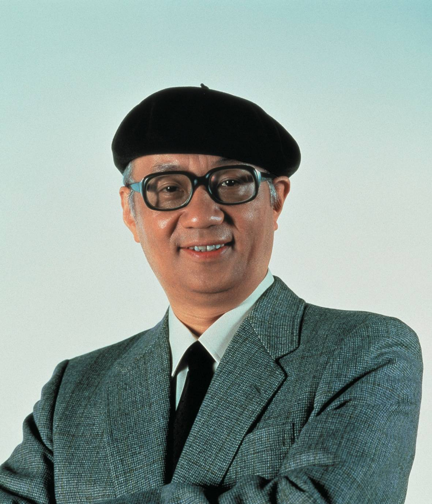
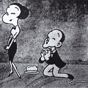
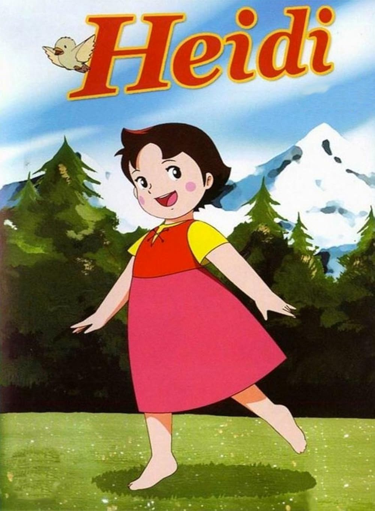

 Osamu Tezuka L'histoire des anime commence au début du xxe siècle, lorsque des réalisateurs japonais s'essaient aux techniques d'animation qui avaient été explorées en Occident. Malgré ces expérimentations précoces, avec notamment un premier long métrage, Le Serpent blanc, en 1958, il faut attendre Astro, le petit robot, créé en 1963 par Osamu Tezuka (Voir lien sous l'image), pour toucher au succès populaire. Durant les années 1970, les anime continuent à se développer, se séparant de leurs racines occidentales et développant des genres uniques tels que les mecha. On retrouve à cette époque des œuvres comme Lupin III et Mazinger Z. Durant cette période, plusieurs réalisateurs deviennent fameux, notamment Hayao Miyazaki et Mamoru Oshii. Dans les années 1980, les anime sont intégrés à la culture populaire et la production explose. Le démarrage de la franchise Gundam et les débuts de la carrière de Rumiko Takahashi marquent le commencement de la décennie. En 1988, Akira obtient le record du coût de production d'un anime. Pendant les années 1990 et les 2000, les anime reçoivent plus d'égards à l'étranger qu'auparavant. Akira, Ninja scroll (1993) et Ghost in the Shell (1995) deviennent célèbres à travers le monde. Des séries comme Neon Genesis Evangelion et Cowboy Bebop triomphent au Japon, mais captent aussi l'attention en Occident. Le Voyage de Chihiro reçoit le 1er prix ex æquo du Festival du film de Berlin 2002 et remporte l'Oscar du meilleur film d'animation en 2003, et le Festival de Cannes 2004 place Innocence : Ghost in the Shell 2 en compétition officielle.
Très peu d'œuvres dessinées à cette époque sont parvenues jusqu'à nous. Les raisons varient mais sont principalement commerciales. Après avoir été exploitées, les bobines, propriétés des cinémas, étaient vendues à de plus petits cinémas à travers le pays puis découpées et vendues en petites bandes, voire en image par image. Oten Shimokawa : Caricaturiste politique et illustrateur ayant travaillé pour le magazine Tokyo Puck. Sa carrière débute grâce à la Tenkatsu, qui l'embauche pour réaliser une animation. Pour des raisons médicales, il ne fait que 5 films, dont Imokawa Mukuzo - Genkanban no maki, avant de retourner à son travail d'illustrateur. Jun'ichi Kōchi : Caricaturiste et peintre, ayant également étudié l'aquarelle. En 1912, il pénètre le secteur de l'illustration, puis, en 1916, il est embauché par Kobayashi Shokai pour une animation. Il est considéré comme l'animateur japonais le plus techniquement avancé des années 1910. Son travail compte environ 15 films. Seitarō Kitayama : À la différence des autres pionniers de cette ère, Kitayama fabrique des animations par lui-même. Il fonde d'ailleurs son propre studio, Kitayama Eiga Seisakujo, qui ferme ses portes par manque de succès commercial. Sa technique consiste à animer sur tableau noir, puis sur papier (avec ou sans arrière-plans pré-imprimés). Son travail compte plusieurs films, dont Urashima Tarō.
 Yosuji Murato, Hakuzan Kimura, Sanae Yamamoto et Noburo Ōfuji ont été disciples de Seitarō Kitayama et travaillaient dans son studio de film. Kenzo Masaoka, un autre animateur important, travaillait dans un studio plus mineur. En 1923, le Grand tremblement de terre de Kantō détruit la majeure partie du studio Kitayama et les animateurs résidant se dispersent et fondent de nouveaux studios, comprenant l'intérêt financier de l'animation. Pendant ce temps, les premières lois de protection des enfants sont adoptées, amenant à la censure de certains anime destinés aux enfants de moins de 15 ans. Parallèlement, les films éducatifs étaient encouragés par le Monbusho (Ministère de l'éducation). Des centaines de milliers de yens furent dépensés dans leur promotion. L'animation trouva un usage durable dans l'enseignement, la politique et l'industrie, entraînant une forte demande de nouveau contenu.
 Au cours des années 1970, le marché japonais du film s'écroule face à la concurrence de la télévision. La Toei arrête progressivement la production de comédies musicales somptueuses inspirées de Disney pour se consacrer à la production de séries télévisées. Mushi Production est mis en banqueroute, dispersant ses animateurs dans de nouveaux studios, par exemple Madhouse Production et Sunrise. À cause de cela, de nombreux jeunes animateurs accèdent à la réalisation même, sans avoir été promus à ce poste. Cette injection de jeunes talents apporte un nouveau souffle, une grande variété d'expérimentations et de visions. La série Heidi (1974) d'Isao Takahata est un exemple de ces expérimentations. Au départ, ce programme se vend péniblement, jugée trop réaliste pour des enfants. La plupart des chaînes de télédiffusion pensent qu'il ne sera pas apprécié car les enfants ont besoin de quelque chose de plus "fantastique" pour s'immerger dans la fiction. Heidi est finalement un succès mondial, exporté dans de nombreux pays européens où il demeure très populaire. Au Japon, le succès est si colossal qu'il permet à Hayao Miyazaki et Isao Takahata de lancer une série d’anime basée sur des œuvres littéraires, le cycle des Chefs-d'œuvre du théâtre mondial. Bien que Miyazaki et Takahata délaissent le projet à la fin des années 1970, la série perdure jusqu'au milieu des années 1990. Un autre genre, le mecha, apparaît à cette époque. Mazinger Z (1972-1974), Kagaku ninja-tai Gatchaman (1972-1974), Yamato (1974-1975) et Mobile Suit Gundam (1979-1980) en sont quelques-uns des plus symboliques. Ces titres montrent une progression du genre science-fiction dans les anime, marqué par un changement d'une orientation fantastique "super-héros" vers une orientation space opera "réaliste", proposant des scénarios de plus en plus complexes et de moins en moins manichéens. Char Aznable de Mobile Suit Gundam en est un exemple fameux, passant du statut d'ennemi dans les premières séries pour devenir un allié dans les suites Mobile Suit Zeta Gundam puis à nouveau un ennemi dans le film Mobile Suit Gundam : Char contre-attaque.